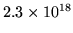

<!DOCTYPE HTML PUBLIC "-//W3C//DTD HTML 3.2 Final//EN">
<!-- Converted with jLaTeX2HTML 98.1p1 release (March 2nd, 1998) + JP patch 2.0 (March 16th, 1998)
patched by Kenshi Muto (mutou@three-a.co.jp), Three-A Systems,Co.,Ltd.
LaTeX2HTML 98.1p1 release (March 2nd, 1998)
originally by Nikos Drakos (nikos@cbl.leeds.ac.uk), CBLU, University of Leeds
* revised and updated by:  Marcus Hennecke, Ross Moore, Herb Swan
* with significant contributions from:
  Jens Lippmann, Marek Rouchal, Martin Wilck and others  -->
<HTML>
<HEAD>
<TITLE>rand</TITLE>
<META NAME="description" CONTENT="rand">
<META NAME="keywords" CONTENT="REFS">
<META NAME="resource-type" CONTENT="document">
<META NAME="distribution" CONTENT="global">
<META HTTP-EQUIV="Content-Type" CONTENT="text/html; charset=iso-2022-jp">
<LINK REL="STYLESHEET" HREF="REFS.css">
<LINK REL="next" HREF="node172.htm">
<LINK REL="previous" HREF="node170.htm">
<LINK REL="up" HREF="node4.htm">
<LINK REL="next" HREF="node172.htm">
</HEAD>
<BODY BGCOLOR=NavajoWhite>
<!-- Navigation Panel -->
<A NAME="tex2html2650"
 HREF="node172.htm">
</A> 
<A NAME="tex2html2647"
 HREF="node4.htm">
</A> 
<A NAME="tex2html2641"
 HREF="node170.htm">
</A> 
<A NAME="tex2html2649"
 HREF="node1.htm">
</A>  
<BR>
<STRONG> Next:</STRONG> <A NAME="tex2html2651"
 HREF="node172.htm">randn</A>
<STRONG> Up:</STRONG> <A NAME="tex2html2648"
 HREF="node4.htm">$B%j%U%!%l%s%9%^%K%e%"%k(J</A>
<STRONG> Previous:</STRONG> <A NAME="tex2html2642"
 HREF="node170.htm">qz</A>
<BR>
<BR>
<!-- End of Navigation Panel -->

<H2><A NAME="SECTION0004167000000000000000">&#160;</A><A NAME="man_rand">&#160;</A>
<BR>
rand
</H2><FONT SIZE="-1"><FONT SIZE="-1"><FONT SIZE="-1"><FONT SIZE="-1"><FONT SIZE="-1"><FONT SIZE="-1"></FONT></FONT></FONT></FONT></FONT></FONT><DL COMPACT>

<DT>$B!ZL\E*![(J
<DD>rand - $B0lMMMp?t(J
<DT>$B!Z7A<0![(J
<DD><PRE>
y = rand()            Y = rand(n)
   Real y;               Array Y;
                         Integer n;
  
Y = rand(m,n)         Y = rand(X)
   Array Y;              Array Y;
   Integer m,n;          (Matrix|Array) X;
  
s = rand("seed");     p = rand("seed", s);
   Integer s;            Integer p;
                         Integer s;
</PRE><FONT SIZE="-1"><DT>$B!Z>\:Y![(J
<DD>rand()$B$O!$6h4V(J(0,1)$B$K0lMM$KJ,I[$9$kMp?t$r@8@.$9$k!#@0?t(J n $B$K$D$$$F!$(J
rand(n)$B$O(J n * n $B$N0lMMMp?tG[Ns$rJV$9!#(Jrand(m,n) $B$O!$(Jm * n $B$N0lMMMp?t(J
$BG[Ns$rJV$9!#(JX $B$,9TNs$N$H$-!$(Jrand(X) $B$O!$(JX $B$HF1$8Bg$-$5$N0lMMMp?t(J
$BG[Ns$rJV$9!#(J
  
rand() $B$O5?;wMp?t$K4p$E$-6h4V(J [</FONT>2<SUP>-53</SUP><FONT SIZE="-1">, </FONT>1-2<SUP>-53</SUP><FONT SIZE="-1">] $B$NIbF0>.?tE@$r(J
$B@8@.$9$k!#M}O@E*$K!$@8@.$5$l$kMp?t$N<~4|$OLs(J </FONT>
<!-- MATH: $2.3 \times 10^{18}$ -->
<FONT SIZE="-1">$B$G$"$k!#(J
$BMp?tNs$OMp?tH/@84o$N>uBV$K0MB8$7$F7hDj$5$l!$Mp?tH/@84o$N>uBV$O(J
$B<o$K$h$C$FJQ99$G$-$k!#(Jrand("seed") $B$O0lMMMp?t$N<o(J(Integer)$B$rJV$7!$(J
rand("seed", m) $B$O0lMMMp?t$N<o$r@0?t(J m $B$K@_Dj$9$k!#(J
<DT>$B!ZNcBj![(J
<DD>1 * 4 $B$N0lMMMp?tG[Ns$r@8@.$9$k!#(J</FONT><PRE>
Y = rand(1, 4)
=== [Y] : (  1,  4) ===
           (  1)         (  2)         (  3)         (  4)
(  1)  2.853808E-01  2.533581E-01  9.346853E-02  6.084968E-01
</PRE><FONT SIZE="-1"><FONT SIZE="-1">$B<!$NNc$G$O!$$^$:Mp?tH/@84o$N<o$rD4$Y$k!#(J1$B8D$NMp?t$r@8@.$9$k$H<o$,(J
$BJQ$o$k$3$H$,J,$+$k!#<o$r(J 1 $B$KLa$9$HA0$HF1$8Mp?t$,@8@.$5$l$k!#(J</FONT></FONT><PRE>
&gt;&gt; s = rand("seed")
s = 1271983233
&gt;&gt; y = rand()
y = 0.90342
&gt;&gt; s = rand("seed")
s = 1776642162
&gt;&gt; s = rand("seed", 1)
s = 1
&gt;&gt; y = rand()
y = 0.285381
</PRE><FONT SIZE="-1"><FONT SIZE="-1"><FONT SIZE="-1"><DT>$B!Z;;K!![(J
<DD>$BJ88%(J 1, 2 $B;2>H!#(J
<DT>$B!Z;2>H![(J
<DD></FONT></FONT></FONT>
<DIV><TT>randn(<A HREF="node172.htm#man_randn">2.173</A>)
<BR></TT></DIV><FONT SIZE="-1"><FONT SIZE="-1"><FONT SIZE="-1"><FONT SIZE="-1"><DT>$B!ZJ88%![(J
<DD></FONT></FONT></FONT></FONT><DL COMPACT>
<DT>1.
<DD>William H. Press and Brian P. Flannery and Saul A. Teukolsky 
and William T. Veterling, Numerical Recipes in C (The Art of 
Scientific Computing), Cambridge University Press, 1988
<DT>2.
<DD>$BC07D(J $B>!;T(J, $B1|B<(J $B@2I'(J, $B:4F#(J $B=SO/(J, $B>.NS(J $B@?(J, 
$B%K%e!<%a%j%+%k%l%7%T!&%$%s!&%7!<(J, $B5;=QI>O@<R(J, 1993
</DL><FONT SIZE="-1"></DL><FONT SIZE="-1"><FONT SIZE="-1"><FONT SIZE="-1"><FONT SIZE="-1"><FONT SIZE="-1"></FONT></FONT></FONT></FONT></FONT></FONT>
<BR><HR>
<ADDRESS>
Masanobu KOGA
$BJ?@.(J11$BG/(J10$B7n(J2$BF|(J
</ADDRESS>
</BODY>
</HTML>
